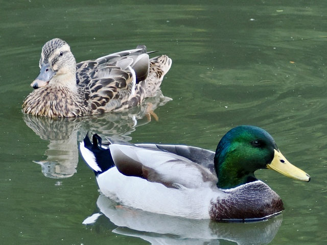
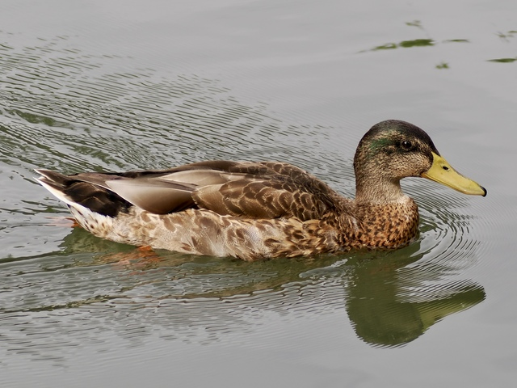
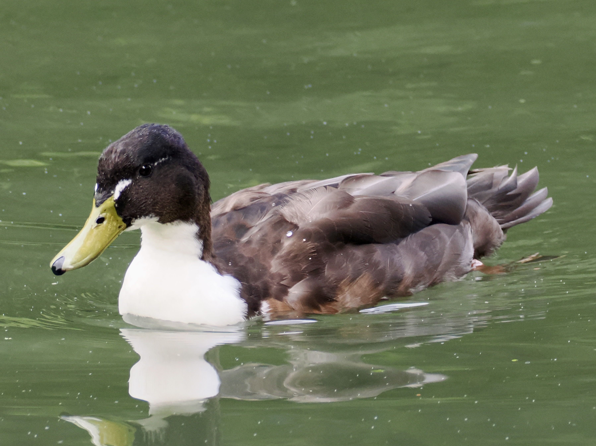
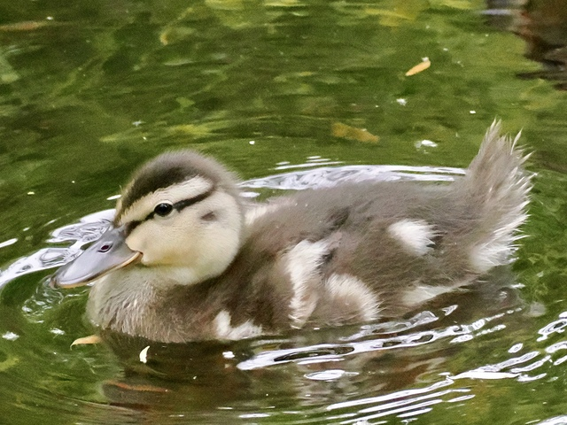
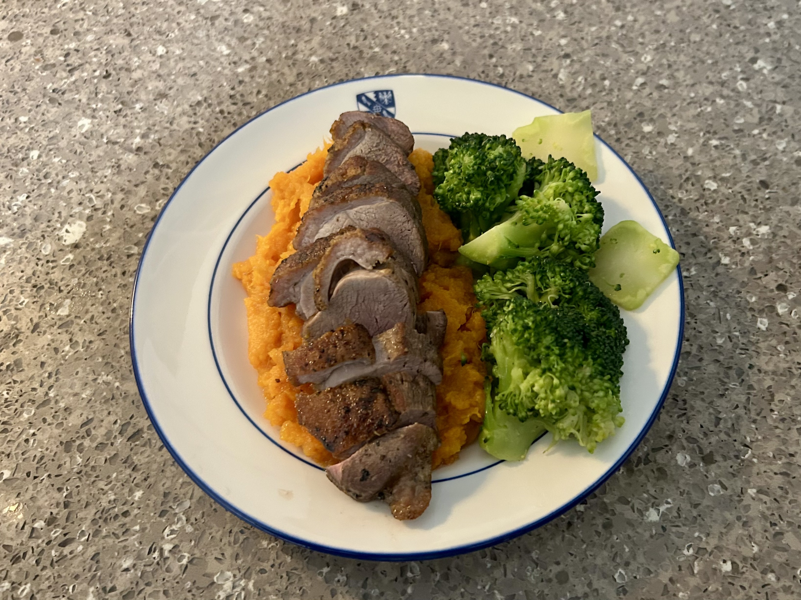

Mallard
Anas platyrhynchos
Order: Anseriformes
Family: Anatidae

The ancestor of the domestic duck. Breeding male has a glossy green head, brown breast, yellow bill, and grey body with curled black tail feathers. Female is mottled brown with an orange bill.

Eclipse male has a brown head, but can be distinguished from females by the yellow bill.

Domestic-type birds have more varied plumage, often littered with white.

Duckling is brown and yellow with a brown eye stripe and ear spot.

I must say, they taste delicious!